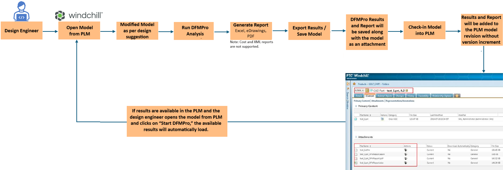
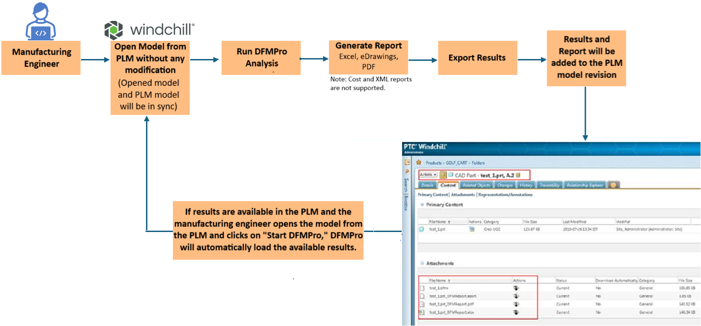
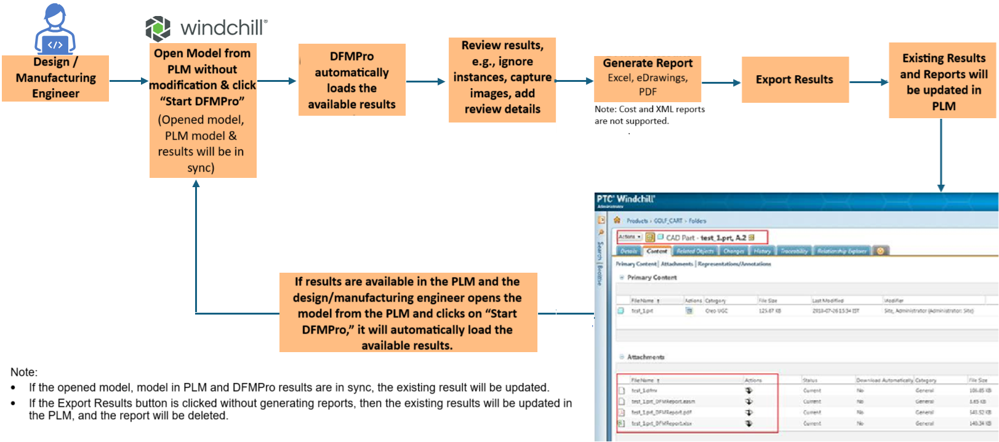
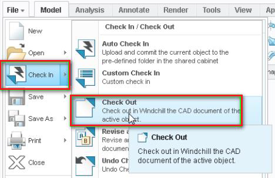
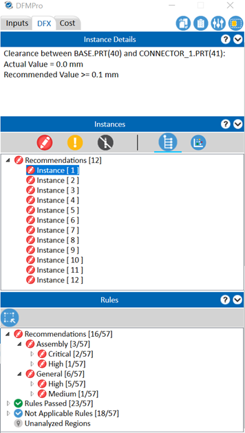
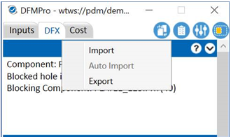
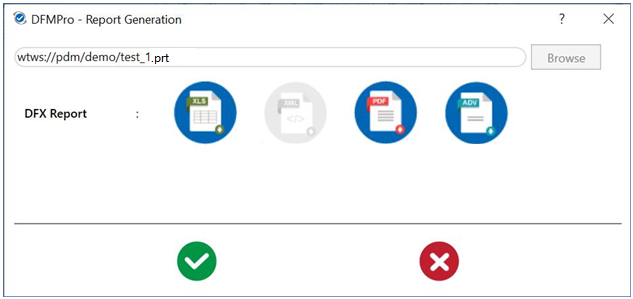
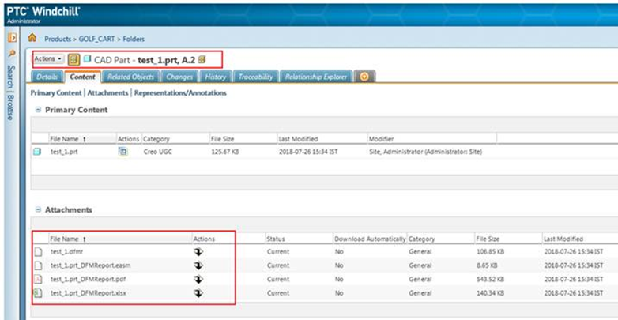
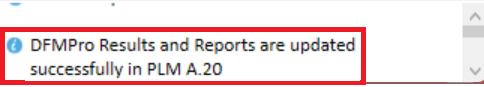
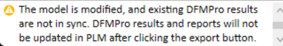

Start DFMPro をクリックして、DFMPro ユーザーインターフェースを起動します。
Start DFMPro をクリックして、DFMPro ユーザーインターフェースを起動します。
必要なモジュールを選択し、設定を入力した後、DFMPro 解析を実行します。
詳細については、DFMPro との PLM 連携を参照してください。



注記:
この機能を有効にするには、DFMPro for Creo Parametric インストールガイド内の「DFX 結果レビューワークフロー」セクションを参照してください。
Creo Parametric を起動します。
File メニューをクリックし、Check In オプションをクリックします。
表示されたメニューから Check Out を選択し、パーツを開きます。

Start DFMPro をクリックして、DFMPro ユーザーインターフェースを起動します。
必要なモジュールを選択し、設定を入力した後、DFMPro 解析を実行します。

結果を Windchill のパーツに添付するには:

 を使用してレポートを生成し、添付したいレポートを選択します。
を使用してレポートを生成し、添付したいレポートを選択します。
注記:
コストレポートおよび XML レポートは PLM 連携ではサポートされていません。
Excel、eDrawings、および PDF レポートは、パーツがチェックインされた際にパーツのリビジョンに添付されます。
Windchill へのアップロード: チェックイン時に、結果およびレポートがパーツとともにアップロードされます。

DFMPro の結果がすでに PLM に存在し、ユーザーが PLM からモデルを開いて「Start DFMPro」をクリックした場合、DFMPro 設定で Automatic オプションが選択されていれば、結果は自動的にインポートされます。
Automatic オプションが選択されていない場合は、メニューから Import オプションを使用して、DFMPro の結果を手動でインポートする必要があります。
DFMPro では、モデルのバージョンをインクリメントせずに、結果およびレポートを PLM に更新することができます。
注記:
PLM 設定の詳細については、dfmpro.support@hcl-software.com までテクニカルサポートチームにお問い合わせください。
PLM から モデル を開くと、DFMPro の結果をレビューできます。
DFMPro の結果をレビューし、画像のキャプチャ、コメントの追加、重要でない項目の無視などを行います。
を使用してレポートを生成し、Export ボタンをクリックして結果およびレポートを更新します。更新が成功すると、DFMPro は成功メッセージを表示します。

注記:
途中でモデルが変更された場合、DFMPro は結果の更新を停止します。モデル変更後に既存の結果と同期していない状態（DFMPro の背景が黄色）の場合、「Export」ボタンでは結果やレポートを更新できません。DFMPro はステータスメッセージでユーザーに通知します。

モデルが変更された場合は、更新された結果を得るために解析を再実行する必要があります。モデルを PLM にチェックインすると、新しいモデルリビジョンと更新された結果が利用可能になります。
解析を再実行すると、DFMPro は以前に無視された項目やキャプチャされた画像、コメントを保持します。